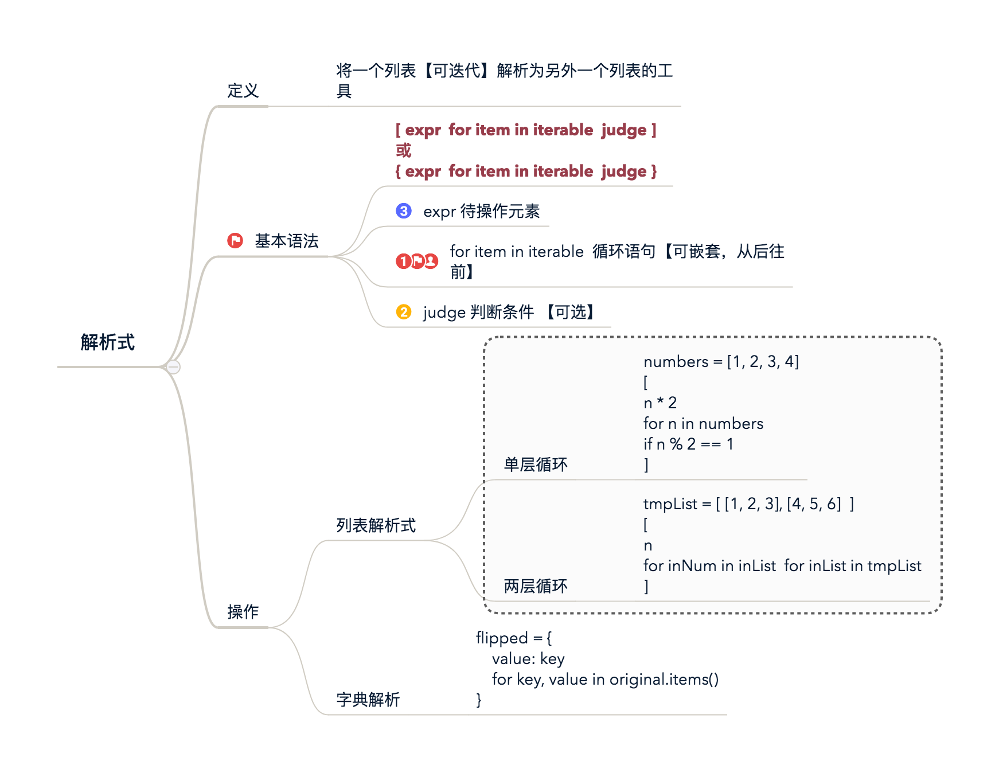

目标
- 掌握解析式的使用
- liet 解析式
- dict 解析式
- 深入理解迭代器
- 深入理解生成器
第一部分 迭代器、生成器
参考完全理解Python迭代对象、迭代器、生成器, 完整实例请看原文。
在了解Python的数据结构时，容器(container)、可迭代对象(iterable)、迭代器(iterator)、生成器(generator)、列表/集合/字典推导式(list,set,dict comprehension)众多概念参杂在一起，难免让初学者一头雾水，我将用一篇文章试图将这些概念以及它们之间的关系捋清楚。

请仔细看上图
请仔细看上图
请仔细看上图
1 容器（container）
像列表（list）、集合（set）、序列（tuple）、字典（dict）都是容器。简单的说，容器是一种把多个元素组织在一起的数据结构， 【可以逐个迭代获取其中的元素。】但是，但是，但这并不是容器本身提供的能力，而是可迭代对象赋予了容器这种能力，当然并不是所有的容器都是可迭代的，比如：Bloom filter，虽然Bloom filter可以用来检测某个元素是否包含在容器中，但是并不能从容器中获取其中的每一个值，因为Bloom filter压根就没把元素存储在容器中，而是通过一个散列函数映射成一个值保存在数组中。
1 | 'a' in {'a', 'b', 'c'} # 输出 True |
2 可迭代对象(iterable)
凡是可以返回一个迭代器的对象都可称之为可迭代对象
1 | x = [1, 2, 3] |
这里x是一个可迭代对象，可迭代对象和容器一样是一种通俗的叫法，并不是指某种具体的数据类型，list是可迭代对象，dict是可迭代对象，set也是可迭代对象。
y和z是两个独立的迭代器，迭代器内部持有一个状态，该状态用于记录当前迭代所在的位置，以方便下次迭代的时候获取正确的元素。
迭代器有一种具体的迭代器类型，比如list_iterator，set_iterator。
可迭代对象实现了iter方法，该方法返回一个迭代器对象。

3 迭代器(iterator)
那么什么迭代器呢？它是一个带状态的对象，他能在你调用next()方法的时候返回容器中的下一个值，任何实现了iter和next()（python2中实现next()）方法的对象都是迭代器，
iter返回迭代器自身，
next返回容器中的下一个值，
如果容器中没有更多元素了，则抛出StopIteration异常，至于它们到底是如何实现的这并不重要。
所以，迭代器就是实现了工厂模式的对象，它在你每次你询问要下一个值的时候给你返回。有很多关于迭代器的例子，比如itertools函数返回的都是迭代器对象。
迭代器就像一个懒加载的工厂，等到有人需要的时候才给它生成值返回，没调用的时候就处于休眠状态等待下一次调用。
1 | from itertools import cycle |
4 生成器(generator)
生成器算得上是Python语言中最吸引人的特性之一生成器其实是一种特殊的迭代器，不过这种迭代器更加优雅。
它不需要再像上面的类一样写iter()和next()方法了，只需要一个yiled关键字。
生成器一定是迭代器（反之不成立），因此任何生成器也是以一种懒加载的模式生成值。用生成器来实现斐波那契数列的例子是：
1 | def fib(): |
说实在的没看懂，后续章节补充这个。。。
总结：
- 容器是一系列元素的集合，str、list、set、dict、file、sockets对象都可以看作是容器
容器都可以被迭代（用在for，while等语句中），因此他们被称为可迭代对象。 - 可迭代对象实现了iter方法，该方法返回一个迭代器对象。
- 迭代器持有一个内部状态的字段，用于记录下次迭代返回值，它实现了next和iter方法，迭代器不会一次性把所有元素加载到内存，而是需要的时候才生成返回结果。
- 生成器是一种特殊的迭代器，它的返回值不是通过return而是用yield。
第二部分 解析式
1 什么是列表解析式？
列表解析式是将一个列表（实际上适用于任何可迭代对象（iterable））转换成另一个列表的工具。在转换过程中，可以指定元素必须符合一定的条件，才能添加至新的列表中，这样每个元素都可以按需要进行转换。参考

如果看过图就明白了，就结束啦
2 Show Code
需求： 遍历数组，将满足条件的数据放入新的数组中
单层嵌套
1 | # 一般的写法 |
*解析式表达如下，分三部分
1 | doubled_odds = [ |
说明
基本语法： [ expr for item in iterable judge ]
1 | 1. expr 待操作元素 |
双层嵌套
1 | tmpList = [ [1, 2, 3], [4, 5, 6] ] |
参照list解析式，记住语法，其实也不难
1 | flipped = { |